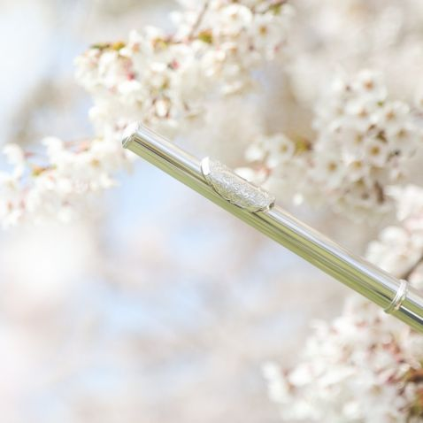
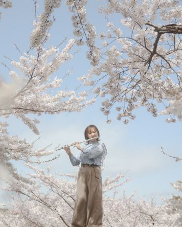
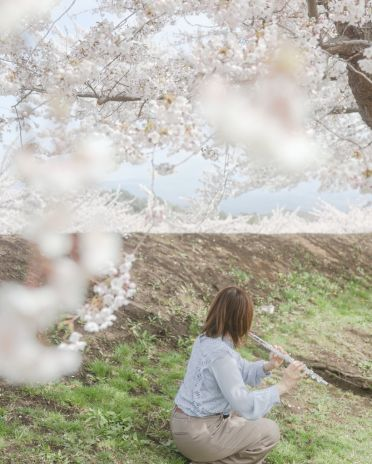

憧れのフルート

大人になってからフルートを習い始めました。最初は思うように音が出ず、指使いもぎこちなくて戸惑うこともありましたが、レッスンを重ねるうちに少しずつ音色を楽しめるようになり、フルートの世界にどんどん惹かれていきました。
数年前には、ついに自分のフルートを購入。リッププレートに入った繊細な彫刻がとても気に入っていて、手にするたびに特別な気持ちになります。
お気に入りの楽器があると、練習へのモチベーションもぐんと上がり、もっともっとフルートが大好きになりました。
今では、自分のペースで好きな曲を練習して楽しんでいます。音を奏でる時間は、心が穏やかになる大切なひとときです。

